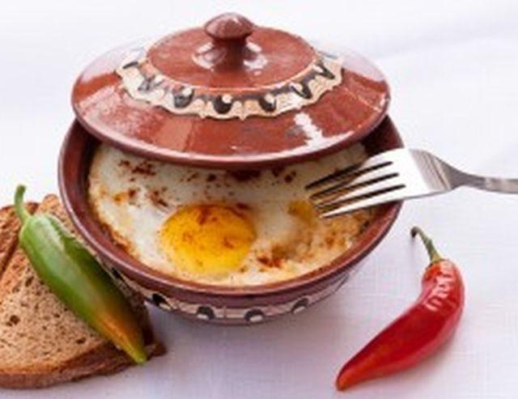

Основные блюда
Каварма из курицы
Тушеная курица с луком, перцем и специями в горшочке.
0.400 кг / 13.80 лв
Каварма из свинины
Ароматное рагу из свинины с овощами.
0.400 кг / 13.80 лв
Куриное филе с грибным соусом
Сочное куриное филе с нежным грибным соусом.
0.350 кг / 15.90 лв
Свинина с грибным соусом
Нежная свинина в насыщенном грибном соусе.
0.350 кг / 15.90 лв

Сыр по-шопски
Запечённый сыр с томатами, яйцами и перцем.
0.350 кг / 9.90 лв
Бургеры с картофелем
Куриный бургер
Сочный куриный бургер с овощами и картофелем.
0.500 кг / 14.00 лв
Свиной бургер
Бургер со свиной котлетой и гарниром.
0.500 кг / 14.00 лв
Говяжий бургер
Классический бургер из говядины с картофелем фри.
0.500 кг / 14.00 лв
Вегетарианский бургер
Растительный бургер со свежим салатом.
0.500 кг / 13.80 лв
Омлет
Омлет натюр
Классический омлет из яиц, с добавками по желанию.
0.300 кг / 7.00 лв
Добавки (по выбору):
+ Кашкавал — 0,050 кг / 2.00 лв
+ Сыр — 0,050 кг / 2.00 лв
+ Бекон — 0,050 кг / 2.00 лв
+ Ветчина — 0,050 кг / 2.00 лв
+ Грибы — 0,050 кг / 2.00 лв
+ Овощной микс — 0,050 кг / 2.00 лв
+ Луканка — 0,050 кг / 2.00 лв
+ Яйцо — 1 шт / 1.60 лв
Английска закуска
Английский завтрак
Полноценный завтрак: яйца, фасоль, колбаса, бекон, тост.
0.600 гр / 19.90 лв